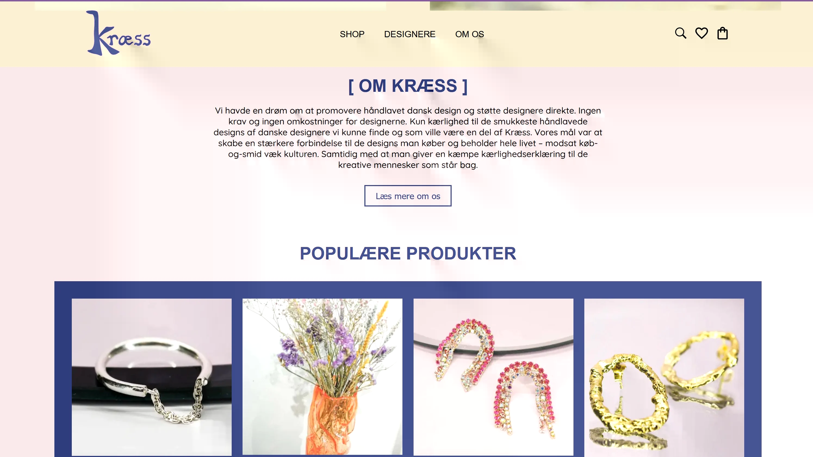
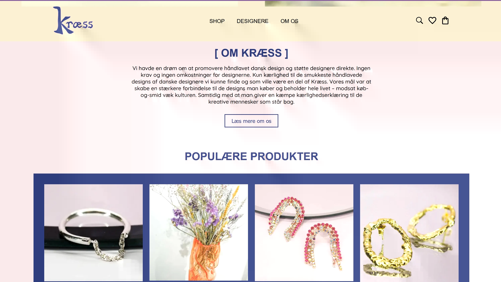

Prototype 2
Jeg har lavet research og idegenreret for at komme frem til den første prototype. Her lavede jeg mindmap på fx tie dyes oprindelse og generelt for t få større viden om mit udvalgte emne tie dye. Ud fra researchen, et moodboard og styletile lavede jeg en prototype i Adobe XD som viser hvordan en hjemmeside der skal sælge t-shirts kan se ud med call to action knapper der skal forbedre brugeroplevelsen. Prototypen har jeg efterfølgende testet via tænke højt test. Resultatet afslørende nogle ændringer der kunne laves for at gøre det mere brugervenligt. Derfor er der i den endelige prototype nøje udvalgt og placeret tekst (copy, microcopy og tagline) samt billeder for det visuelle udtryk.
Ux pitch deck
Endeligt har jeg lært at pitche som kan bruges for en eventuel arbejdsgiver eller kunde. Det er vigtigt at kunne sælge sit produkt eller ide og præsentere det på fordelagtig måde fx at præsentere et problem og derefter en mulig løsning.

 
